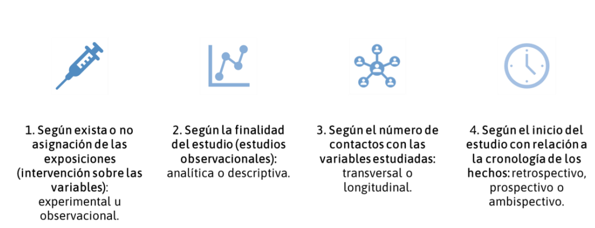
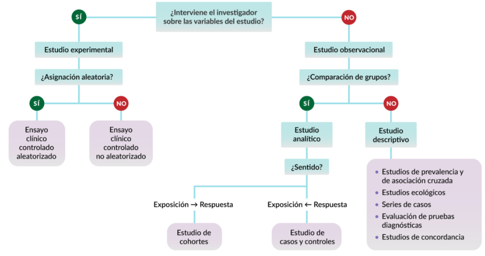
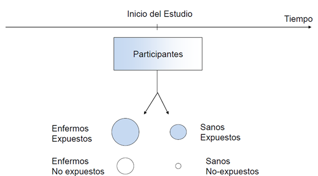
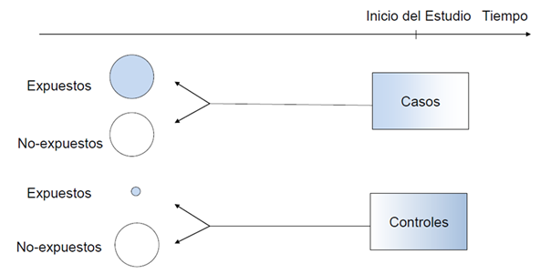
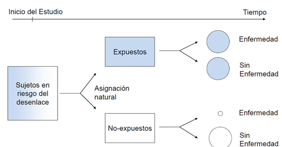

2 Diseños de investigación
Un estudio bien diseñado es la piedra angular de una investigación científica rigurosa y confiable. El diseño de investigación define la estrategia metodológica que guiará la recopilación, y en cierto grado el análisis e interpretación de los datos, asegurando que los datos obtenidos permitan conclusiones válidas a partir de resultados reproducibles. En el ámbito de la Medicina y las Ciencias de la Salud, la elección del diseño adecuado es crucial, ya que impacta directamente en la solidez de la evidencia científica generada.
Los diseños de investigación pueden clasificarse en diversas categorías según su estructura, enfoque metodológico y finalidad. Existen diseños experimentales, observacionales, longitudinales, transversales, entre otros. Un diseño bien estructurado permite minimizar sesgos, optimizar la validez de los resultados y garantizar que la investigación pueda responder de manera objetiva y precisa a los interrogantes planteados.

En esta sección, abordaremos brevemente los distintos tipos de diseños de investigación empleados en estudios primarios dentro del paradigma cuantitativo. Exploraremos sus características esenciales, ventajas y limitaciones, proporcionando ejemplos que facilitarán la comprensión de su aplicación en el contexto biomédico.
2.1 Clasificación general
Los diseños en estudios de tipo experimental se enumeran a continuación:
-
Ensayos clínicos
Ensayos clínicos aleatorizados (ECA)
Ensayos clínicos no aleatorizados (ECNA)
Ensayos comunitarios
Ensayos no clínicos o pre-clínicos
Por otro lado, los diseños en estudios observacionales “analíticos” son:
Trasversal analítico
Caso-control
Cohorte
Por último, se puede consideran dentro de los diseños de estudios observacionales “descriptivos” a:
Estudios de Prevalencia o Incidencia
Estudios ecológicos o de panel
Serie de casos o reportes de casos

Spoiler!
Muchos fuentes bibliográficos podrían diferir un poco de esta clasificación, aunque podrían no ser la forma más acertada de clasificar a los estudios [descubriremos ello en la siguiente sección].
2.2 Ensayos clínicos
Un EC es una evaluación experimental de un producto, sustancia, medicamento, técnica diagnóstica o terapéutica que, a través de su aplicación a seres humanos, pretende valorar su eficacia y seguridad.
Existen varios tipos de diseño de ensayos clínicos, que se pueden clasificar de la siguiente manera:
Metodología de un ECA
Selección de Participantes y Tamaño de la Muestra
Los participantes de un ECA deben otorgar su consentimiento informado. La población experimental se define por criterios de inclusión y exclusión, lo que equilibra validez interna y generalización. La determinación del tamaño muestral debe garantizar suficiente poder estadístico para detectar diferencias significativas sin desperdiciar recursos. Un muestreo incorrecto puede sesgar los resultados.
Asignación Aleatoria y Sesgo de Selección
La aleatorización distribuye equitativamente a los participantes en los grupos de intervención, minimizando sesgos y equilibrando factores pronósticos. Existen métodos como la aleatorización simple, por bloques y estratificada. Además, el enmascaramiento evita que los investigadores o participantes influyan en los resultados.
Enmascaramiento (Cegamiento)
Se utilizan técnicas de cegamiento para evitar sesgos. Existen tres niveles:
Simple ciego: el participante desconoce el tratamiento.
Doble ciego: tanto el participante como el investigador lo desconocen.
Triple ciego: también lo desconoce quien analiza los datos.
Si no es posible el doble ciego, se puede emplear una evaluación no enmascarada de los resultados (open label).
Pérdidas, Abandonos y Sesgo de Seguimiento
Es crucial registrar las pérdidas y sus causas para evitar el sesgo de seguimiento. El análisis por intención de tratar conserva la aleatorización y refleja la práctica clínica real.

Directrices para el reporte de los ECA
Existen guías que rigen que se debe reportar al momento de publicar un ECA, siendo la declaración CONSORT la más utilizada. CONSORT proporciona una lista de verificación de 25 ítems y un diagrama de flujo para mejorar la transparencia y la validez de los estudios. Se han desarrollado extensiones para otros tipos de ensayos, disponibles en EQUATOR Network.
¡Atención!
Los ECA que suelen evaluar seguridad y eficacia suelen ser Ensayos clínicos aleatorizados, controlados (contra placebo, otra intervención o cuidado estandar), de grupos paralelos, y de superioridad.
Sobre este tipo de estudios ampliaremos en otros capítulos.
2.3 Diseño trasversal analítico
El diseño transversal analítico es un tipo de metodología en estudios observacionales en el que se analizan asociaciones entre variables en un solo punto en el tiempo. A diferencia de los estudios longitudinales, que observan a los sujetos durante un periodo determinado, los estudios transversales ofrecen una fotografía instantánea de la población en estudio.

Este diseño es útil para explorar factores de riesgo y asociaciones epidemiológicas en una población determinada. Se utiliza ampliamente en estudios de salud pública y en la investigación clínica cuando se busca evaluar patrones o tendencias sin necesidad de un seguimiento prolongado.
Ejemplo
Un estudio puede evaluar la relación entre el consumo de tabaco y la hipertensión arterial en una muestra de adultos de una ciudad. Se tomarían mediciones de la presión arterial y se registraría el hábito tabáquico de cada participante en un solo momento. Los datos obtenidos permitirían identificar si existe una asociación entre el tabaquismo y la hipertensión, pero no podrían determinar si el consumo de tabaco es la causa directa de la enfermedad o si a causa de la enfermedad los participantes consumen el tabaco.
Ventajas y desventajas
| Ventajas | Desventajas |
|---|---|
| Rápidos y de bajo costo. | No determinan causalidad. |
| Permiten estudiar múltiples variables simultáneamente. | Pueden presentar sesgo importantes en la selección. |
| Son útiles para generar hipótesis para estudios posteriores. | No identifican cambios a lo largo del tiempo. |
2.4 Diseño de casos-controles
El diseño de casos y controles es un tipo de metodología que se emplea para investigar la relación entre una exposición y una enfermedad o condición específica. Se basa en la comparación entre un grupo de individuos que presentan la enfermedad (casos) y un grupo de individuos sin la enfermedad (controles), evaluando retrospectivamente su exposición a factores de riesgo.

Características principales
Observacional y retrospectivo: Se parte del desenlace (enfermedad) y se busca en el pasado la exposición a posibles factores de riesgo.
Comparativo: Se analizan diferencias entre los casos (afectados) y los controles (no afectados).
Eficiente para enfermedades raras: Especialmente útil en patologías poco frecuentes o con largos períodos de latencia.
Menos costoso y más rápido que estudios prospectivos como cohortes o ensayos clínicos.
No mide incidencia ni prevalencia: Solo permite calcular la odds ratio (OR) como estimador del riesgo relativo.
Advertencia!
En este tipo de diseño debes de partir conociendo el desenlace en los participantes. Posteriormente, se encuesta o se busca en sus registros para determinar si estuvieron o no expuestos al factor de interes.
Ejemplo
Un estudio puede investigar si el consumo de alcohol está asociado con el desarrollo de cáncer de esófago. Se seleccionan dos grupos:
Casos: Pacientes diagnosticados con cáncer de esófago.
Controles: Personas sin cáncer de esófago, pero con características similares a los casos (edad, género, ubicación geográfica).
A ambos grupos se les pregunta sobre su historial de consumo de alcohol en los últimos 10 años. Si se encuentra que el grupo de casos tiene una mayor proporción de consumo excesivo en comparación con los controles, se puede sugerir una asociación entre el consumo de alcohol y el cáncer de esófago.
Ventajas y desventajas
| Ventajas | Desventajas |
|---|---|
| Útil para estudiar enfermedades raras. | No establece causalidad, solo asociación. |
| Requiere menos tiempo y recursos que estudios de cohortes. | Puede haber sesgo de recuerdo (los casos recuerdan mejor su exposición). |
| Posibilita el análisis de múltiples factores de riesgo. | Difícil seleccionar controles adecuados. |
¡Atención!
La selección de casos puede obtenerse a partir de:
Casos incidentes: Nuevos diagnósticos en un periodo definido. Es la mejor alternativa; pero requiere “acumular” casos.
Casos prevalentes: Casos en un periodo definido (nuevos y antiguos). Usualmente son más leves; difícil medir la exposición
Casos fatales: Casos que fallecieron
Mientras, la selección de controles:
Se debe obtener de la misma población base que los casos. Esto determina en gran medida la validez del estudio
Deben seleccionarse independientemente de la exposición
La evaluación de la exposición debe ser equivalente a la usada en los casos
Se puede seleccionar más de un control por caso (como máximo se recomienda 4 controles por caso)
2.5 Diseño de cohorte
El diseño de cohorte es un tipo de metodología que se basa en el siguimiento a un grupo de individuos a lo largo del tiempo para evaluar la relación entre una exposición y la aparición de una enfermedad o condición de interés. Este diseño es particularmente útil para estudiar relaciones con consideración temporal.

Características principales
Se realiza un seguimiento de los participantes durante un periodo determinado.
Permite calcular incidencia y riesgo relativo: A diferencia de los estudios de casos y controles, en los estudios de cohorte se pueden calcular tasas de incidencia y riesgo relativo (RR).
-
Puede ser prospectivo o retrospectivo:
Prospectivo: Se sigue a los individuos desde el presente hacia el futuro.
Retrospectivo: Se utilizan registros pasados para reconstruir la exposición y el desenlace.
¡Atención!
La diferencia entre un estudio de cohorte retrospectivo y un estudio de casos y controles radica en la selección de la población. En un estudio de cohorte, se parte de un grupo de individuos que están en riesgo de desarrollar el desenlace de interés y se les sigue en el tiempo para evaluar la incidencia de la enfermedad. En cambio, en un estudio de casos y controles, los casos ya han desarrollado la enfermedad, y los controles se seleccionan sin la enfermedad, pero no necesariamente comparten el mismo riesgo de desarrollarla.
Ejemplo de estudio de cohorte
Un estudio puede evaluar la relación entre el tabaquismo y el desarrollo de enfermedad pulmonar obstructiva crónica (EPOC). Se seleccionan dos grupos de individuos:
Expuestos: Personas que fuman.
No expuestos: Personas que no fuman.
Ambos grupos son seguidos durante 10 años para determinar cuántos desarrollan EPOC. Si se encuentra que la incidencia de la enfermedad es significativamente mayor en los fumadores, se puede inferir una asociación entre el tabaquismo y la EPOC.
Ventajas y desventajas
| Ventajas | Desventajas |
|---|---|
| Establece secuencia temporal entre exposición y enfermedad. | Puede ser costoso y requerir largos períodos de seguimiento. |
| Permite calcular incidencia y riesgo relativo. | Puede haber pérdida de participantes (sesgo de seguimiento). |
| Útil para estudiar exposiciones raras. | No es eficiente para enfermedades poco frecuentes. |
2.6 Reto del día
Imagina que eres un investigador en salud pública y deseas evaluar si ser madre adolescente se asocia con una menor proporción de dar la lactancia materna exclusiva (LME) hasta los 6 meses. Basándote en los diferentes diseños de estudio, responde:
Diseño transversal analítico:
¿Cómo recolectarías los datos en un único momento para evaluar la relación entre maternidad adolescente y LME <6 meses?
¿Qué limitaciones tiene este enfoque en comparación con otros diseños?
Diseño de cohorte:
¿Cómo estructurarías un estudio de seguimiento desde el nacimiento hasta los 6 meses para comparar la duración de la LME entre madres adolescentes y no adolescentes?
¿Qué ventajas ofrece este diseño respecto al transversal?
Diseño de casos y controles:
¿Cómo seleccionarías casos (madres con LME <6 meses) y controles (madres con LME ≥6 meses) para evaluar si la maternidad adolescente es un factor de riesgo?
¿Cuáles serían los posibles sesgos en la selección de los controles?
🔍 Tu reto: Elige uno de estos diseños y plantea un esquema metodológico breve sobre cómo lo llevarías a cabo.
2.7 Otros diseños
Diseño Ecológico
Este diseño estudia asociaciones a nivel poblacional en lugar de individuos, analizando datos agregados (también llamados de panel) para identificar tendencias u asociaciones.
Características principales:
Se basa en datos secundarios (estadísticas nacionales, registros de salud, encuestas poblacionales).
No permite establecer causalidad directa debido a la falacia ecológica.
Se usa para generar hipótesis epidemiológicas.
Ejemplo:
Un análisis de la relación entre la tasa de madres adolescentes y la prevalencia de lactancia materna exclusiva a nivel nacional o regional.
Diseño de Serie de Casos
Este diseño describe características de un grupo de individuos con una condición específica, sin incluir un grupo de comparación.
Características principales:
Se enfoca en la descripción detallada de los sujetos.
No permite inferencias causales ni comparaciones directas.
Es útil para identificar patrones y generar hipótesis.
Ejemplo:
Un estudio que documenta la evolución de la lactancia en un grupo de madres adolescentes con mucopolisacaridosis en un hospital durante un año.
¡Consejo!
Una serie de casos puede considerarse una cohorte en el sentido de que todos los participantes comparten características similares. Sin embargo, para que un estudio sea clasificado como un diseño de cohorte, es necesario que incluya tanto un grupo de individuos expuestos como un grupo de no expuestos que tendran una medicion de variables en por lo menos dos veces en el tiempo, permitiendo así la comparación de resultados entre ambos grupos.
Estudio de prevalencia / incidencia
Este tipo de estudios se utilizan para medir la prevalencia / incidencia de una condición o factor de riesgo y son útiles para generar hipótesis, aunque no permiten establecer causalidad.
Dentro de los estudios transversales, existen dos enfoques clave:
-
Estudios de Prevalencia
Miden la frecuencia de una enfermedad o condición en una población en un momento determinado.
Se expresan como proporciones (% de personas afectadas).
Son útiles en salud pública para conocer la carga de una enfermedad y planificar estrategias de intervención.
Ejemplo: Encuestas nacionales sobre obesidad o diabetes.
-
Estudios de Incidencia
Aunque la incidencia generalmente se evalúa en estudios de cohorte, también puede estimarse en ciertos estudios transversales repetidos en el tiempo.
Miden el número de casos nuevos de una enfermedad en un período específico.
Se expresan como tasa de incidencia (número de casos nuevos por población en riesgo).
Ejemplo: Evaluación anual de nuevos casos de COVID-19 en una comunidad.
Diferencias clave
| Característica | Estudios de Prevalencia | Estudios de Incidencia |
|---|---|---|
| ¿Qué mide? | Casos existentes en un momento dado | Casos nuevos en un período |
| Tipo de estudio | Transversal | Generalmente de cohorte, pero puede estimarse en estudios transversales repetidos |
| Utilidad | Describir la carga de enfermedad | Analizar la velocidad de aparición de la enfermedad |
| Ejemplo | Encuesta sobre depresión en adolescentes | Nuevos diagnósticos de VIH en un año |
Ambos tipos de estudios son esenciales en epidemiología para comprender el estado de salud de una población y orientar políticas sanitarias.
2.8 Referencia
Torales Julio, Barrios Iván. Diseño de investigaciones: algoritmo de clasificación y características esenciales. Med. clín. soc. [Internet]. 2023 Dec [cited 2025 Feb 09] ; 7( 3 ): 210-235. Available from: https://doi.org/10.52379/mcs.v7i3.349
Ledesma Albarrán JM, Gutiérrez Olid M. Estudios experimentales. Ensayo clínico aleatorizado. Form Act Pediatr Aten Prim. 2013;6;123-32. Available from: https://fapap.es/articulo/246/estudios-experimentales-ensayo-clinico-aleatorizado
Unidad de Epidemiología Clínica y Bioestadística. Complexo Hospitalario Juan Canalejo. A Coruña. Pita Fernández, S. Epidemiología. Conceptos básicos. En: Tratado de Epidemiología Clínica. Madrid; DuPont Pharma, S.A.; Unidad de epidemiología Clínica, Departamento de Medicina y Psiquiatría. Universidad de Alicante: 1995. p. 25-47. Actualización 28/02/2001
2.9 Disclaimer
- Esta sección fue editada usando ChatGPT.